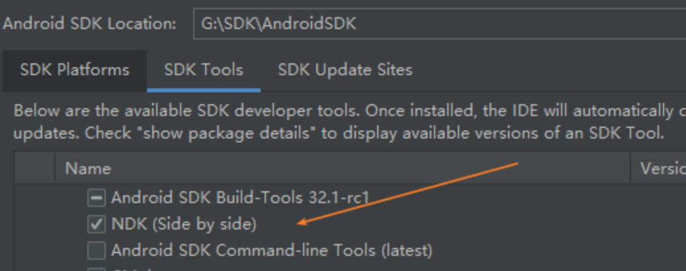
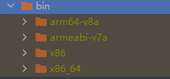
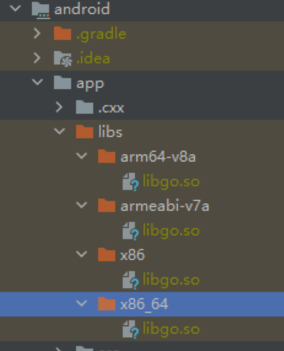
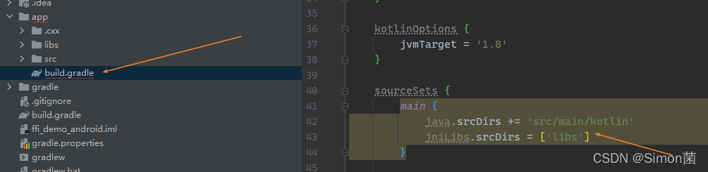
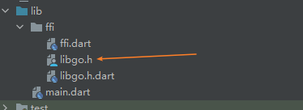
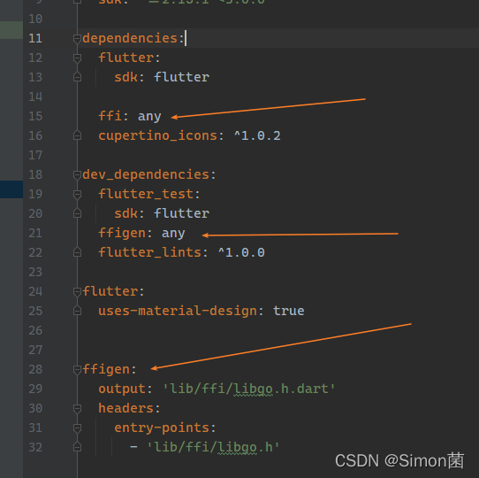
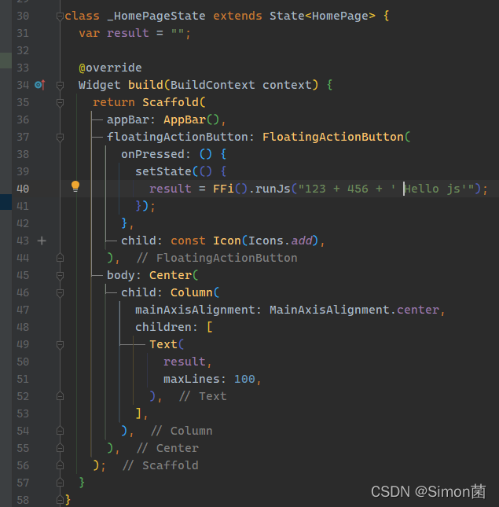
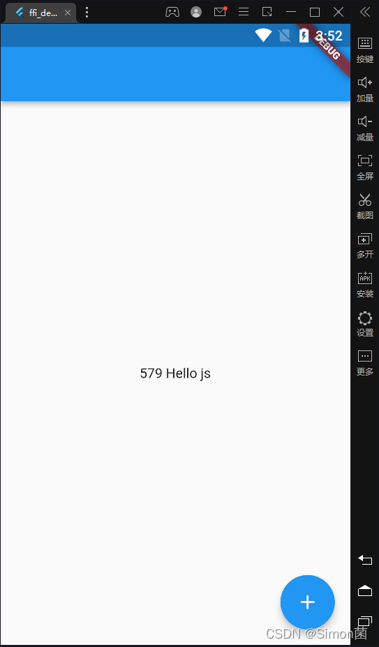

在Flutter项目使用FFI调用Golang项目全记录
在Flutter项目使用FFI调用Golang项目全记录
前言
目前有一个项目涉及到html的解析, js执行等. 由于dart的库并不是很完善, 于是打算使用golang来实现这部分功能, 然而在过程中遇到了许多坑, 特此记录过程
0x01 go代码编写
这里使用go的 otto 做一个javascript解析器, 项目代码如下:
package main
/*
#include<stdlib.h>
struct JsResult {
char* result;
int len;
int err;
};
*/
import "C"
import (
"github.com/robertkrimen/otto"
"unsafe"
)
func main() {
}
type JsResult C.struct_JsResult
//export RunJs
func RunJs(input *C.char) JsResult {
res := C.GoString(input) // *C.char -> string
vm := otto.New()
result, err := vm.Run(res)
if err != nil {
errMsg := err.Error()
return JsResult{
result: (*C.char)(C.CString(errMsg)),
err: 1,
len: C.int(len(errMsg)),
}
}
str := result.String()
return JsResult{
result: (*C.char)(C.CString(str)), // string -> *C.char
err: 0,
len: C.int(len(str)),
}
}
//export FreeResult
func FreeResult(result JsResult) {
C.free(unsafe.Pointer(result.result))
}注意事项:
package main不能改动, 必须为main由于go有gc, 所以函数的返回值必须为c语言结构, 否则会报错
import "C"和上面的C语言代码中间不能有空行//export RunJs的//和export中间不能有空格(虽然不少编程规范推荐有空格)C.CString和C.CBytes用完需要释放
0x02 编译go代码
安装NDK, 这里我使用Android Studio的SDK Manager进行安装

使用下面脚本, 进行构建(build.cmd)
set ANDROID_NDK_HOME=G:\SDK\AndroidSDK\ndk\24.0.7956693
set GOARCH=arm
set GOOS=android
set CGO_ENABLED=1
set CC=%ANDROID_NDK_HOME%\toolchains\llvm\prebuilt\windows-x86_64\bin\armv7a-linux-androideabi21-clang
go build -ldflags "-w -s" -buildmode=c-shared -o ./bin/armeabi-v7a/libgo.so ./main.go
echo Build armeabi-v7a finish
set GOARCH=arm64
set GOOS=android
set CGO_ENABLED=1
set CC=%ANDROID_NDK_HOME%\toolchains\llvm\prebuilt\windows-x86_64\bin\aarch64-linux-android21-clang
go build -ldflags "-w -s" -buildmode=c-shared -o ./bin/arm64-v8a/libgo.so ./main.go
echo Build arm64-v8a finish
set GOARCH=amd64
set GOOS=android
set CGO_ENABLED=1
set CC=%ANDROID_NDK_HOME%\toolchains\llvm\prebuilt\windows-x86_64\bin\x86_64-linux-android24-clang
go build -ldflags "-w -s" -buildmode=c-shared -o ./bin/x86_64/libgo.so ./main.go
echo Build x86_64 finish
set GOARCH=386
set GOOS=android
set CGO_ENABLED=1
set CC=%ANDROID_NDK_HOME%\toolchains\llvm\prebuilt\windows-x86_64\bin\i686-linux-android24-clang
go build -ldflags "-w -s" -buildmode=c-shared -o ./bin/x86/libgo.so ./main.go
echo Build x86 finish其中 ANDROID_NDK_HOME 替换为NDK安装目录, 这四段程序分别生成 armeabi-v7a (老安卓设备), arm64-v8a (新安卓设备), x86_64 (不常见), x86 (模拟器常见). 其他设备请自行查阅go编译选项修改 GOARCH 和 GOOS
此时会生成bin文件夹, 里面有4个平台的依赖库, 请按照需求自行删减

0x03 导入so文件
将4个文件夹复制到android的libs目录中(如果没有则新建一个), .h文件可以删除

修改 build.gradle 文件, 在 sourceSets 中添加 main.jniLibs.srcDirs = ['libs'] 后build即可

0x03 FFI绑定
将刚才build出来的 libgo.h 复制到任意目录下(我这里是ffi), 参照ffigen的文档进行配置, 我的配置如下
随后将会生成如图 libgo.h.dart


随后编写dart → c 与 c → dart逻辑进行绑定
import 'libgo.h.dart';
import 'package:ffi/ffi.dart' as ffi;
import 'dart:ffi';
class FFi {
FFi._();
final _native = NativeLibrary(DynamicLibrary.open('libgo.so'));
static final FFi _instant = FFi._();
factory FFi() => _instant;
String runJs(String input) {
// input
final raw = input.codeUnits;
final buffer = ffi.malloc.allocate<Int8>(raw.length + 1);
buffer.asTypedList(raw.length + 1)
..setAll(0, raw)
..[raw.length] = 0;
final result = _native.RunJs(buffer);
final message = String.fromCharCodes(result.result.asTypedList(result.len));
final error = result.err;
// free
ffi.malloc.free(buffer);
_native.FreeResult(result);
if (error != 0) throw Exception(message);
return message;
}
}简单写个界面测试下, 测试通过收工

